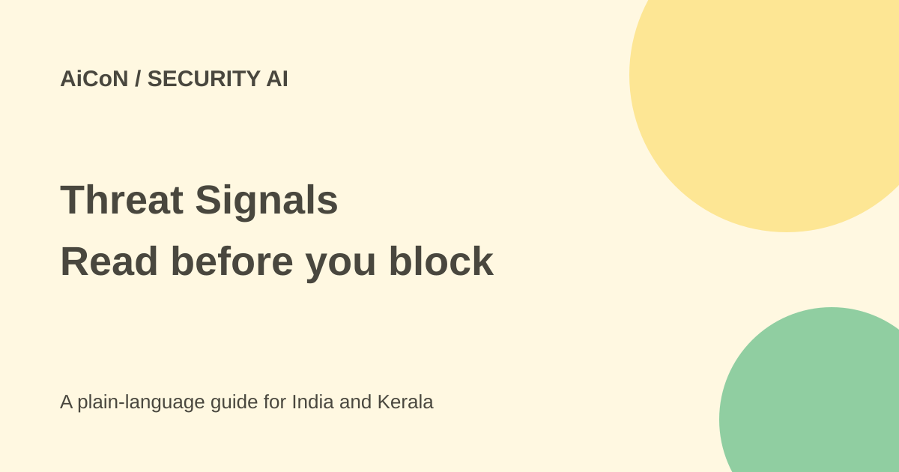

Threat Signals: free threat reports, review before blocking
Threat Signals reads security reports and extracts useful indicators. The free offer is one feed and up to 30 days of storage, not a consumer antivirus or a reason to block every extracted address.

What is Threat Signals?
Cloudflare launched Threat Signals on 29 September 2026. It reads the security reporting you choose, summarises articles, extracts indicators of compromise and adds context and tags. An indicator can be an IP address or domain associated with a reported attack. It is a lead to investigate, not automatic proof that every use of that address is malicious.
The output stays connected to the original report in a private, account-scoped dataset. The service supports RSS 2.0, Atom and RSS 1.0/RDF feeds. RSS is a standard way for a website to publish a list of new articles. The product is for people protecting applications and infrastructure, not for scanning a phone for malware.
What is free and what is paid?
The official announcement says every Cloudflare account gets dashboard and API access, one RSS feed, a private dataset stored for up to 30 days and access to the Threat Events Platform for investigating its events. The API documentation also warns that Free plan quotas and managed default skills apply.
Essentials, Advantage and Elite enterprise customers can expand feeds, storage, proprietary intelligence and custom skills. Do not treat the free offer as unlimited feeds or permanent storage. WAF rule features and the rest of your Cloudflare setup have their own plan limits; verify them before deciding a complete security workflow costs nothing.
How to start with a safe feed
- Use your authorised Cloudflare account. The announcement gives the path Application Security, Threat Intelligence, Threat Signals.
- Choose a reputable security-research feed relevant to your own software and infrastructure.
- Give the feed a clear name and category. Review the available checking frequency and quota.
- Open a processed article and its original source. Check publication date, affected versions and the context of each indicator.
- Inspect the extraction status and tags. The API describes incomplete, failed and completed extraction states, so not every article is ready instantly.
- Investigate whether a proposed indicator applies to your environment. Keep a human review step before creating a blocking rule.
- Test any approved rule on a limited scope and keep a rollback plan. Watch for legitimate requests being blocked.
Why context matters
Reports can contain examples, researcher-controlled infrastructure, old indicators and shared hosting addresses. Blindly converting them into a blocklist can break legitimate access. Cloudflare says tags are constrained to an account's existing catalog and the platform records whether a tag came from AI or an analyst. Review those details rather than treating an attractive summary as the whole investigation.
The announcement says selected article text is fetched, stored in R2 and passed through extraction and skills. This is a cloud workflow. A private dataset does not mean local-only processing or permission to submit private internal incident material to a public-feed ingestion route.
For Indian and Kerala site owners
This can help a team already using Cloudflare monitor reports about the technology it runs. A college website or small business should start with relevant public reports and a limited test, not a broad unattended blocking policy. Identify who reviews alerts, who approves changes and what happens when the 30-day free storage window ends.
What changed since the original post?
The 30 September post focused on free threat intelligence. This guide adds quota boundaries, extraction status, cloud handling and the need to verify indicators before changing WAF policy.
Frequently asked questions
Is it a free antivirus?
No. It turns reporting into threat intelligence for application defenders.
Are all feeds free?
The announced free quota is one RSS feed.
Should every indicator be blocked?
No. Check context, relevance and false-positive risk first.
Was a feed or rule created here?
No. This guide used public official sources.
Sources: Launch, free limits and dashboard route · API permissions and processing status. Checked 7 October 2026.